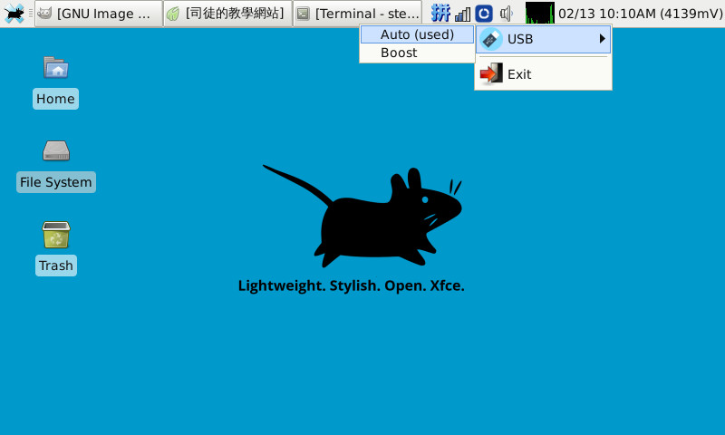

Nokia N900 >> Native Debian >> Kernel 5.3.0
自製設定Trayicon
由於目前的VBUS供電需要透過CommandLine設定，司徒也不想一直開啓VBUS供電功能，主要原因在於耗電過快，因此，司徒使用PyGtk寫了一個USB供電設定App，可以透過這個TrayIcon作切換，程式碼如下。
trayicon.py
#!/usr/bin/python
import os
import sys
import gtk
import glib
import time
import commands
import subprocess
base_path = '/usr/n900/trayicon/'
usb_mode = '/sys/devices/platform/68000000.ocp/48072000.i2c/i2c-2/2-006b/power_supply/bq24150a-0/mode'
class n900:
def __init__(self):
self.statusicon = gtk.StatusIcon()
self.statusicon.set_from_file('{}{}'.format(base_path, 'main.png'))
self.statusicon.connect("activate", self.left_click_event)
def left_click_event(self, event):
time = gtk.get_current_event_time()
button = gtk.get_current_event().button
cur_mode = commands.getoutput('cat {}'.format(usb_mode))
auto = None
menu = gtk.Menu()
submenu = gtk.Menu()
if 'auto' in cur_mode:
auto = gtk.MenuItem("Auto (used)")
else:
auto = gtk.MenuItem("Auto")
auto.connect("button-press-event", self.usb_auto)
submenu.append(auto)
boost = None
if 'boost' in cur_mode:
boost = gtk.MenuItem("Boost (used)")
else:
boost = gtk.MenuItem("Boost")
submenu.append(boost)
boost.connect("button-press-event", self.usb_boost)
img = gtk.Image()
img.set_from_file('{}{}'.format(base_path, 'usb.png'))
n1 = gtk.ImageMenuItem('USB')
n1.set_image(img)
n1.set_submenu(submenu)
menu.append(n1)
menu.append(gtk.SeparatorMenuItem())
menuexit = gtk.ImageMenuItem("Exit")
img = gtk.Image()
img.set_from_file('{}{}'.format(base_path, 'exit.png'))
menuexit.set_image(img)
menuexit.connect("button-press-event", self.exit)
menu.append(menuexit)
menu.show_all()
menu.popup(None, None,
gtk.status_icon_position_menu, button, time, self.statusicon)
def usb_auto(self, widget, event):
os.system('echo auto > {}'.format(usb_mode))
def usb_boost(self, widget, event):
os.system('echo boost > {}'.format(usb_mode))
def exit(self, widget, event):
if event.button == 1:
gtk.main_quit()
n900()
gtk.main()
完成
